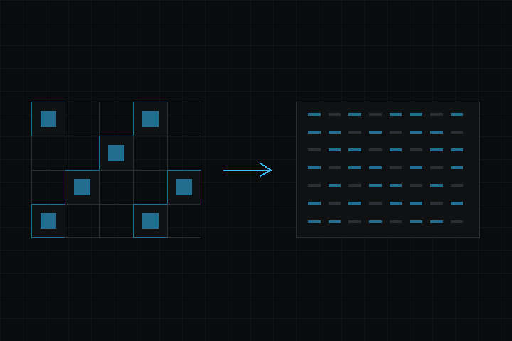

- 다음에 의해 생성됨 :
 1.18.0
1.18.0
|
deki-tiledmapeditor-integration 0.20.2
Deki 패키지 레퍼런스
|

Tiled Map Editor 통합. 프로젝트에 .tmj 파일을 넣으면 에디터가 스트리밍 가능한 바이너리 타일맵으로 베이크합니다.
저장소: github.com/dekiengine/deki-tiledmapeditor-integration · 최신 릴리스: 0.19.0 · 엔진 0.19.0 이상 필요 · 의존: deki-2d, deki-rendering
DekiEditor --packages-add deki-tiledmapeditor-integration <project> 또는 패키지 관리자로 설치합니다. 엔진 자체의 컴포넌트와 C++ API는 Deki 문서에 있습니다.
에디터에는 Tiled Map Editor Integration(으)로 표시됩니다.
| 컴포넌트 | 카테고리 | 설명 |
|---|---|---|
| TilemapColliderComponent | 타일맵 | 타일맵 레이어의 타일별 충돌 모양을 쿼리에 제공합니다. |
| TilemapComponent | 타일맵 | 카메라 주변의 청크를 스트리밍하며 Tiled 맵을 그립니다. |
| TilemapObjectSpawner | 타일맵 | 씬이 로드될 때 Tiled 맵의 오브젝트 레이어에서 오브젝트를 생성합니다. |
빌드에서 뺄 수 있는 부분입니다. define이 있는 기능은 그 define으로 켜고 끄며, 나머지는 컴포넌트와 함께 제거됩니다.
| 기능 | define | 기본값 |
|---|---|---|
| Tilemap Rendering | DEKI_FEATURE_TILEMAP_RENDER | 켜짐 |
| Tilemap Collision | DEKI_FEATURE_TILEMAP_COLLISION | 켜짐 |
| Object Layers | DEKI_FEATURE_TILEMAP_OBJECTS | 켜짐 |
타일맵 레이어의 타일별 충돌 모양을 쿼리에 제공합니다.
인스펙터 이름: 타일맵 콜라이더 컴포넌트 · 카테고리: 타일맵 · 유형: DekiTiledMap::TilemapColliderComponent
| 속성 | 유형 | 기본값 | 제약 | 설명 |
|---|---|---|---|---|
| tilemap | AssetRef (Tilemap) | "" | 타일을 단단한 충돌체로 만들 맵입니다. | |
| collisionLayer | int32 | 0 | 맵의 어떤 레이어에 충돌 타일이 있는지 지정합니다. 그 레이어에 타일이 있는 칸은 막히고, 빈 칸은 막히지 않습니다. | |
| loopX | bool | false | 반복되는 맵에 맞춰 충돌을 가로로 반복합니다. | |
| wrapPeriodX | int32 | 0 | loopX이(가) 허용할 때 표시 | 가로 반복 한 번의 너비(타일 수)입니다. 0이면 맵 자체의 너비를 사용합니다. |
| loopY | bool | false | 충돌을 세로로 반복합니다. | |
| wrapPeriodY | int32 | 0 | loopY이(가) 허용할 때 표시 | 세로 반복 한 번의 높이(타일 수)입니다. 0이면 맵 자체의 높이를 사용합니다. |
카메라 주변의 청크를 스트리밍하며 Tiled 맵을 그립니다.
인스펙터 이름: 타일맵 컴포넌트 · 카테고리: 타일맵 · 유형: DekiTiledMap::TilemapComponent
| 속성 | 유형 | 기본값 | 제약 | 설명 |
|---|---|---|---|---|
| tilemap | AssetRef (Tilemap) | "" | Tiled에서 익스포트한 맵입니다. | |
| visibleLayerMask | int32 | 2147483647 | 맵의 어떤 레이어를 그릴지 레이어당 1비트로 지정합니다. 모든 비트를 켜면 전부 그립니다. | |
| chunkPadding | int32 | 1 | 화면 가장자리 바깥으로 몇 개의 청크를 로드하고 그려 둘지 지정합니다. 여백을 조금 두면 스크롤할 때 가장자리에서 타일이 갑자기 나타나지 않습니다. | |
| chunkCacheKiB | int32 | 256 | 16~262144 | 이 맵이 디코딩된 청크를 보관할 수 있는 메모리 양(KiB)입니다. 한도를 넘으면 가장 오래전에 그려진 청크부터 버리고, 다시 필요할 때 저장소에서 다시 읽습니다. 그래서 너무 작으면 무언가가 빠지는 대신 스크롤 중 끊김으로 나타납니다. ESP32에는 256이 적당하며, 데스크톱은 훨씬 더 많이 쓸 수 있습니다. |
| tintColor | Color | "#FFFFFFFF" | 모든 타일에 곱해집니다. 흰색이면 맵이 그대로 표시됩니다. | |
| pixelsPerMeter | float | 16 | 1~256 | 맵의 몇 픽셀이 1미터인지 지정합니다. 이 값으로 맵이 씬의 다른 모든 것과 맞춰집니다. |
| loopX | bool | false | 맵을 가로로 반복하여, 가장자리를 넘어 스크롤하면 반대쪽으로 이어집니다. | |
| wrapPeriodX | int32 | 0 | loopX이(가) 허용할 때 표시 | 가로 반복 한 번의 너비(타일 수)입니다. 0이면 맵 자체의 너비를 사용합니다. |
| loopY | bool | false | 맵을 세로로 반복합니다. | |
| wrapPeriodY | int32 | 0 | loopY이(가) 허용할 때 표시 | 세로 반복 한 번의 높이(타일 수)입니다. 0이면 맵 자체의 높이를 사용합니다. |
RendererComponent에서 sortingOrder, ignoreClip, pixelSnap, alphaMode을(를) 상속합니다.
씬이 로드될 때 Tiled 맵의 오브젝트 레이어에서 오브젝트를 생성합니다.
인스펙터 이름: 타일맵 오브젝트 생성기 · 카테고리: 타일맵 · 유형: DekiTiledMap::TilemapObjectSpawner
| 속성 | 유형 | 기본값 | 제약 | 설명 |
|---|---|---|---|---|
| tilemap | AssetRef (Tilemap) | "" | 오브젝트 레이어를 읽을 맵입니다. Tiled에서 배치한 각 오브젝트가 씬의 오브젝트가 됩니다. | |
| pixelsPerMeter | float | 16 | 1~256 | 맵의 몇 픽셀이 1미터인지 지정합니다. 이 값으로 생성된 오브젝트가 Tiled에서 놓은 위치에 놓입니다. |
변경 내역은 영어로 되어 있습니다.
이전 릴리스: CHANGELOG.md
패키지의 리플렉션 데이터에서 생성했습니다(엔진 0.20.2). 속성 이름은 씬 파일에서 쓰는 키입니다. 이름을 바꿔도 별칭이 유지됩니다(호환성).